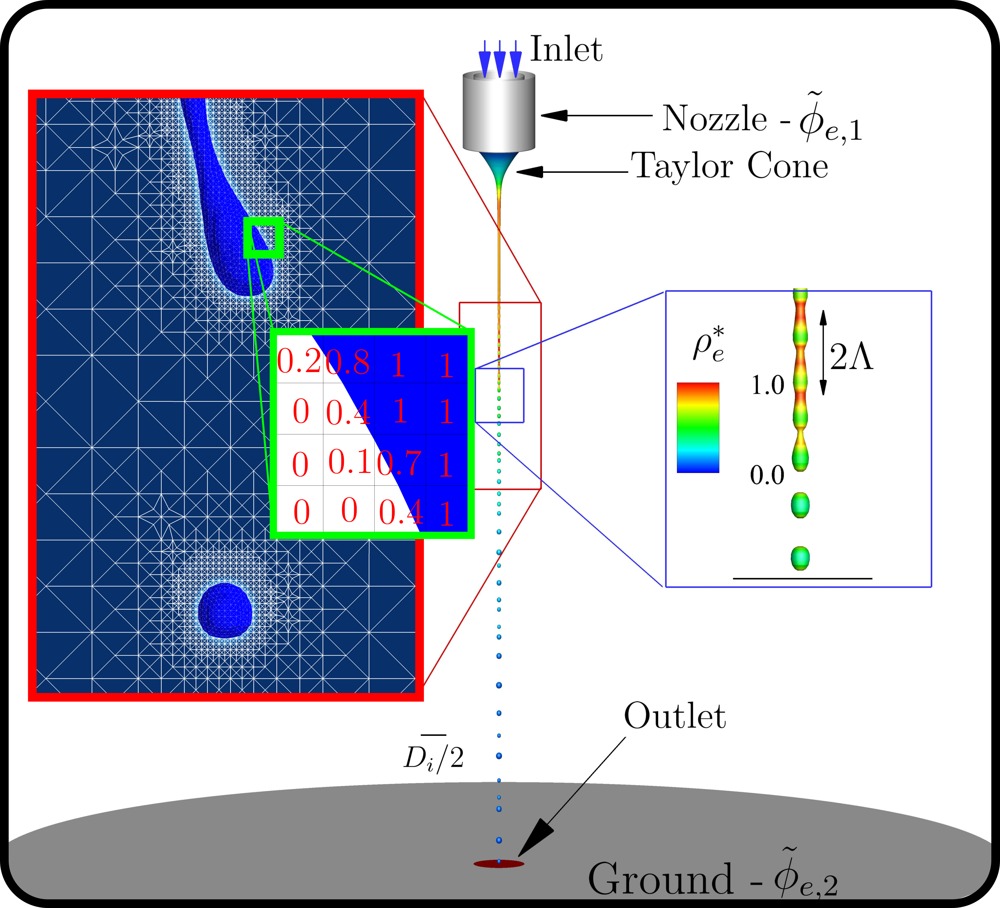
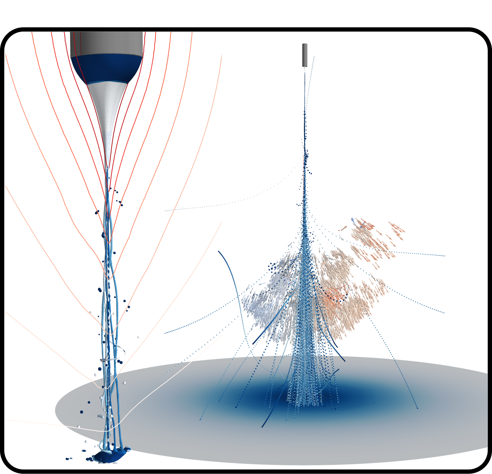
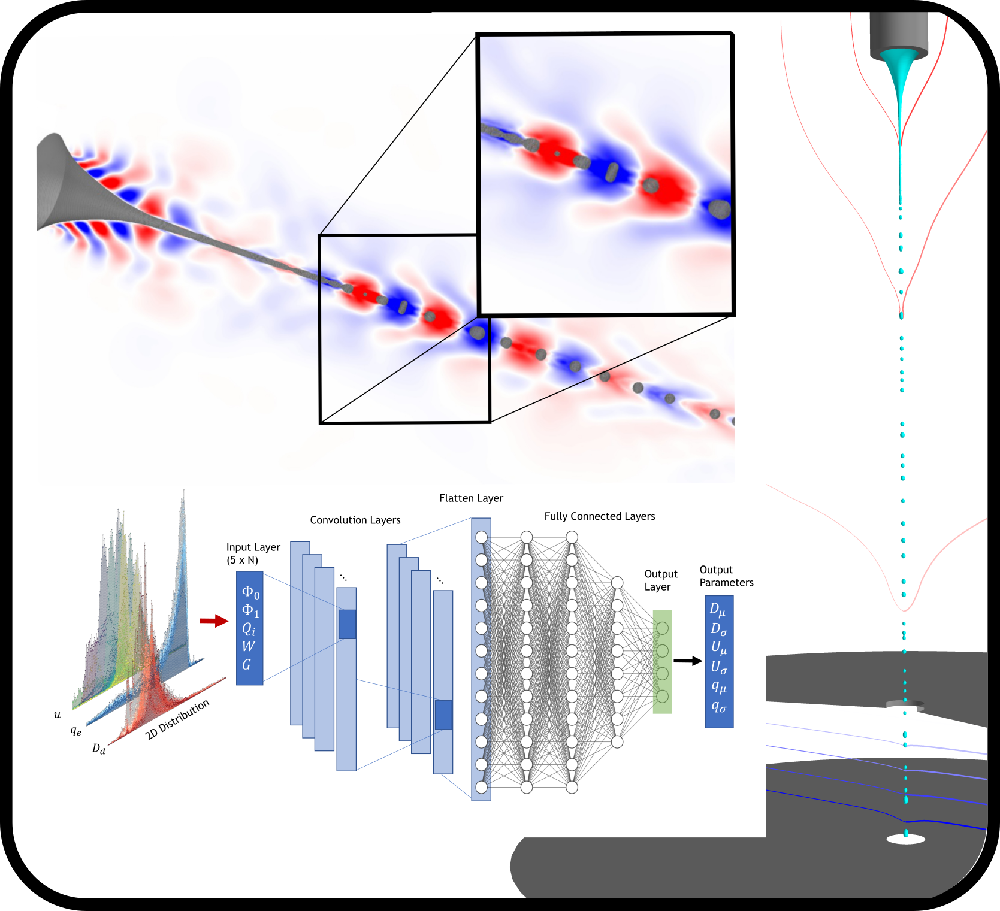

Bem-vindos!
Isto é um resumo do estudo numérico para a Tese de Doutoramento em Engenharia Mecânica na Universidade da Beira Interior desenvolvido por Sílvio Cândido, sobre a orientação de José C. Páscoa trabalho suportado pela Bolsa nº 2020.04517.BD da Fundação para a Ciência e Tecnologia e apoiado pelo Center for Mechanical and Aerospace Science and Technologies
Resumo
Este trabalho é divido em três partes principais, sendo estas Modelação, Desempenho e Aplicações de Jatos Eletrohidrodinâmicos
-

Modelação
Capítulo que descreve em detalhe os diferentes métodos para o cálculo do escoamento bifásico de jatos Eletrohidrodinâmicos. Abordando temas como: Método das Volumes Finitos (FVM), Método dos Volumes de Fluido (Volume of Fluid - VoF) e Método da Partícula Dircreta (Lagrange Particle Tracking - LPT).
-

Desempenho
O modelo numérico é intensivamente testado sob difrentes regimes de operação, incluindo, Jatos em modo Axissimétrico, Formação de intsbilidades tridimensionais e Formação de Plumas.
-

Aplicações
Neste caítulo, o modelo numérico é utilizado em duas propostas de aplicação. Primeiro, a utilização de modelos de ordem reduzida POD/DMD para criação de Digital Twins de Jatos EHD. Segundo, estudo de uma grelha de aceleração para aplicação em micro-propulsores coloidais.